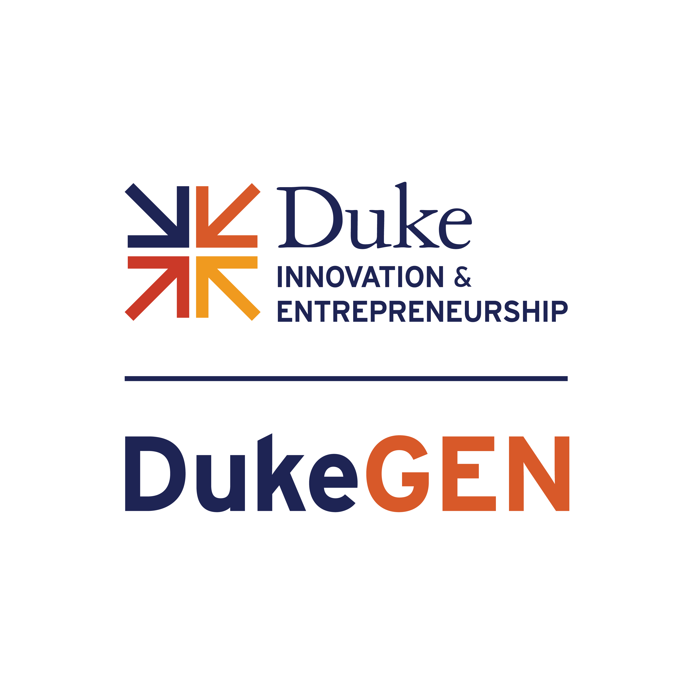

Elevator Pitch Competition
Short, timed pitches judged on clarity and substance. A low-stakes first stage for founders who are still shaping their story.
Since 2008 · Volunteer-run · Duke community
DukeGEN connects Duke founders, operators, investors and friends of Duke around the world. We run pitch competitions, speaker series, showcases and local meetups, so people who build companies can find each other.

Independent organization. DukeGEN is not affiliated with, endorsed by, or funded by Duke University or the Duke Alumni Association. We are a separate organization, organized by Duke alumni and friends of Duke.
Five recurring formats. Each one is built to get founders in front of people who can help them, and to keep alumni in the room after graduation.
Short, timed pitches judged on clarity and substance. A low-stakes first stage for founders who are still shaping their story.
A longer competition for teams with a working product or early traction, judged by operators and investors.
Founders, investors and operators share what they learned building companies. Formerly the Entrepreneurship Education Series.
Companies present to a room of Duke alumni and friends who can invest, advise, hire or introduce.
Local meetups for Duke people building or backing companies. Join the one nearest you, or start one.
Our calendar changes every term and season. Members and subscribers get each event first, with date, location and registration in one place.
Get event invitationsNext event · Community partner
Friday, December 4, 2026 · 2:00–4:00 PM ET
545 NW 26th St, 8th floor, Wynwood, Miami
DukeGEN is a community partner of the #39 AI, Tech, Digital pitch competition hosted by Ga^3in VC. Startups pitch to one VC bench during Art Basel week.
Register on LumaDukeGEN is run by volunteers. Our co-chairs are Duke alumni who build and back companies.
Trinity 1984 · Founder, TRL Growth Advisors
Co-founded DukeGEN in 2008.

Fuqua 2013 · Managing Partner, Ga^3in VC
Co-chair. Invests in and advises early-stage companies.
Fuqua 2013 · CEO, Found & Seek
Co-chair. Builds and leads a company of her own.
Eighteen years of Duke founders helping Duke founders. Reconstructed from the original dukegen.com and DukeGEN sites (2008–2023), Duke Today and early posts by the founders.
Since 2008 DukeGEN has connected the people who start companies at and after Duke. Airtable, which grew up alongside the DukeGEN community and was acquired by Bending Spoons in 2026 at a $2.25B equity value, and the other companies below come from the same Duke founder network.
Duke is one of the schools that "move in and out" of the top 10 for unicorns depending on the graduating vintage, alongside NYU, Princeton and Caltech.Ilya Strebulaev, Stanford GSB Venture Capital Initiative, 2026
Short answers. If yours is not here, email us.
Anyone connected to Duke: students, faculty, staff, alumni, parents and friends of Duke. You do not need to be a founder to join.
No. DukeGEN is not affiliated with, endorsed by, or funded by Duke University or the Duke Alumni Association. We are a separate organization organized by Duke alumni and friends of Duke.
Join the network to receive event invitations. You can also volunteer for an event, speak at a series session, or start a city meetup.
Yes. Competitions and showcases are open to Duke-connected founders. Details and deadlines are posted with each event.
Get event invitations, competition calls and introductions to Duke founders, operators and investors. Nearly 10,000 members already meet in our LinkedIn group.